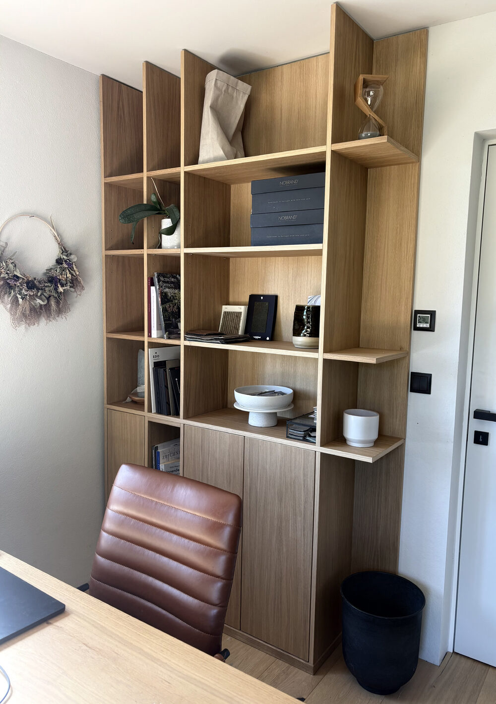

Dein Zuhause. Dein Stil. Dein Gefühl
Nimm dir Zeit für dein Zuhause – und für dich.
Ein kurzer und knackiger Homestyling-Workshop für alle, die ihr Zuhause oder Teile davon verändern und persönlicher sowie stimmiger gestalten möchten.
Dein Zuhause soll ein Ort sein, an dem du dich rundum wirklich wohlfühlst, dich erholen und entfalten kannst.
In diesem Workshop nehmen wir uns Zeit, genau hinzusehen: Was gefällt mir? Was fehlt mir? Wo fühle ich mich wohl – und wo nicht? Und warum?
Du bekommst einen praxisnahen Einblick in die Grundlagen der Innenraumgestaltung und erfährst, wie Raumaufteilung, Farben, Materialien, Licht, Formen und Dekorationsmaterialien die Wirkung eines Raumes beeinflussen.
Vor allem aber geht es um dich und deinen persönlichen Wohnstil. Gemeinsam entdecken wir, welche Farben, Materialien, Formen und Stimmungen zu dir passen – und wie du diese in deinem Zuhause umsetzen kannst.
Nicht nur ein schönes Moodboard, sondern ein klareres Gefühl dafür, was dein Zuhause braucht und wo du ansetzen kannst. Du gehst mit konkreten Ideen nach Hause und weißt, welche Veränderungen du Schritt für Schritt angehen kannst. Du musst nicht alles neu machen. Du musst nur wissen, was zu dir gehört. Denn: Weniger ist meistens mehr.
Grundsätzlich für alle, die Lust auf Interior, Kreativität und Veränderung haben. ;) Besonders aber, wenn du …
Du musst nur Lust darauf haben, dein Zuhause einmal mit anderen Augen zu betrachten.
7. November 2026 – 9–12 Uhr, Graz
2o. November 2026 – 17-20 Uhr, Graz